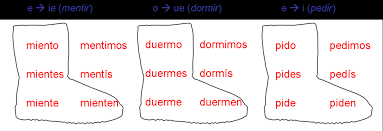
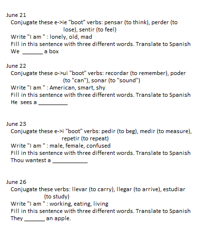
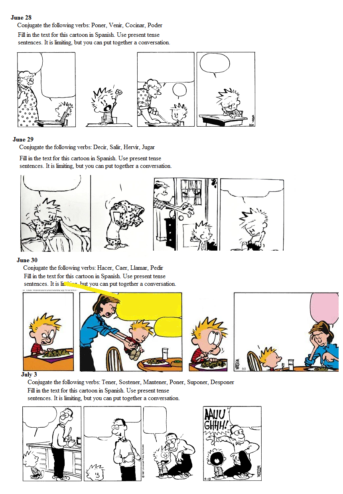

Dillon Homeschool
Monday
- Do your daily math exercises
-
Discuss how you would solve this probability question.
If you pick a card at random from a normal 52 card deck, what is the probabilty that this one card is prime?
- Draw a map of Africa. Add mountains to the map: Atlas, Great Rift Valley, Ethiopian Heights, South African Plateau
- Respond to the daily writing prompt in two or more paragraphs.
- Do your spanish for today
- 6pm class MAKE SURE DAD WAKES UP - MHE
Tuesday
- Do your daily math exercises
-
Discuss how you would solve this probability question.
If you roll three dice, what is the probability of rolling a value less than 8?
- Draw a map of Africa. Add ocean features: Atlantic Ocean, Indian Ocean, Gulf of Guinea, Gulf of Aden, Red Sea, Mediterranean Sea
- Respond to the daily writing prompt in two or more paragraphs.
- 6pm class MAKE SURE DAD WAKES UP - ER verbs and SER
Wednesday
- Do your daily math exercises
-
Discuss how you would solve this probability question.
A bag contains 7 white balls, 3 red balls and 2 black balls. A ball is picked from the bag at random. What is the probability of picking white? Red? Black? Add all three values. Why do you get that answer?
- Draw a map of Africa. Add river features: Nile River, Niger River, Congo River, Zambia River, Suez Canal
- Respond to the daily writing prompt in two or more paragraphs.
- Do your spanish for today
Thursday
- Do your daily math exercises
-
Discuss how you would solve this probability question.
Jill is playing cards with her friend when she draws a card from a pack of 20 cards numbered from 1 to 20.
What is the probability of drawing a number that is square?
- Draw a map of Africa. Add land features: Cape Guardafi, Cape of Good Hope, Sinai Peninsula, Cape Aguihas, Strait of Gibraltar
- Respond to the daily writing prompt in two or more paragraphs.
- Do your spanish for today
- 6pm class MAKE SURE DAD WAKES UP - Navigation
Friday
- Do your daily math exercises
-
Discuss how you would solve this probability question.
A fair 6-sided die is rolled three times. The first time, it is a 1. The second time, it is a 1. What is the probability that the third roll will be a 1?
- Draw a map of Africa. Add major cities of the continent: Lagos, Cairo, Johannesburg, Nairobi, Tripoli, Dakar, Alexandria, Luanda, Kinshasa.
- Respond to the daily writing prompt in two or more paragraphs.
- Do your spanish for today
Spanish Verbs



